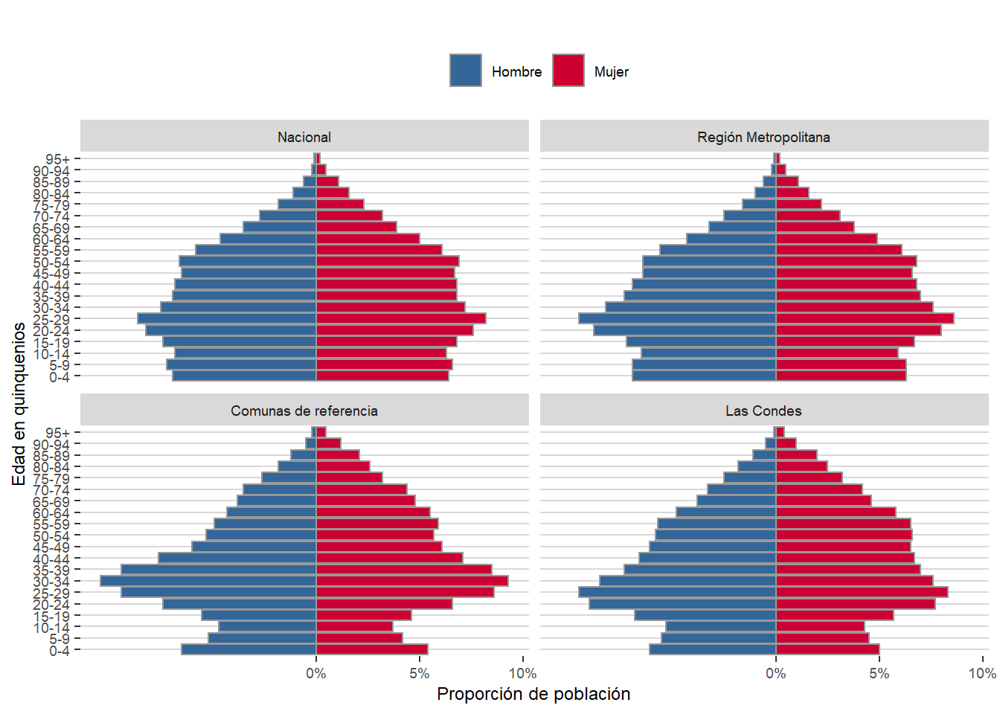
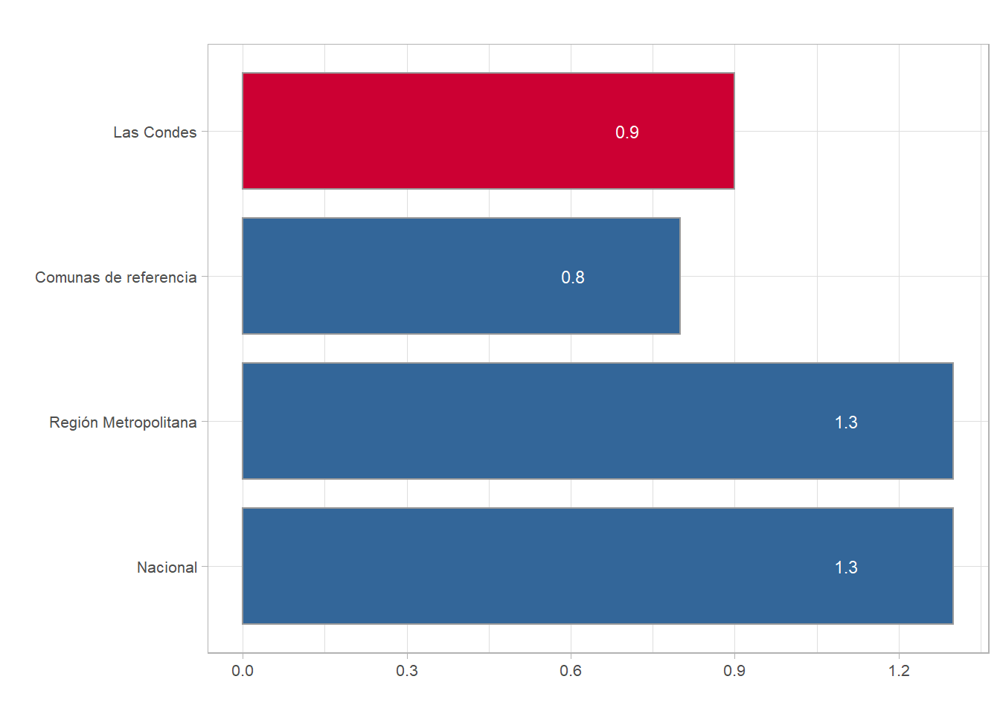
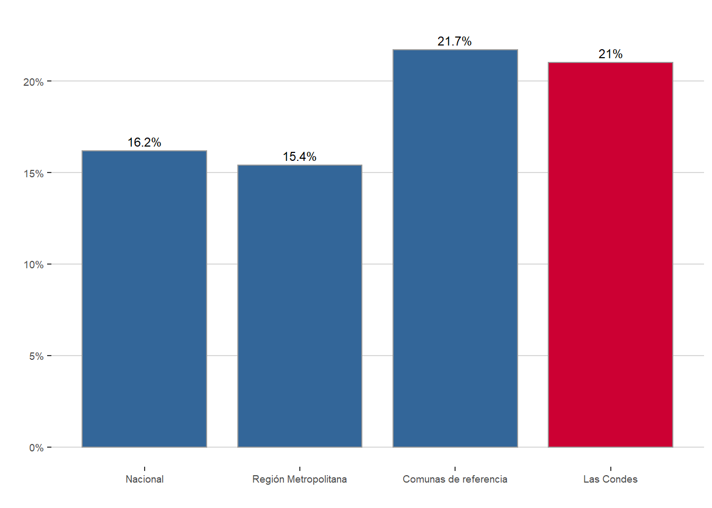
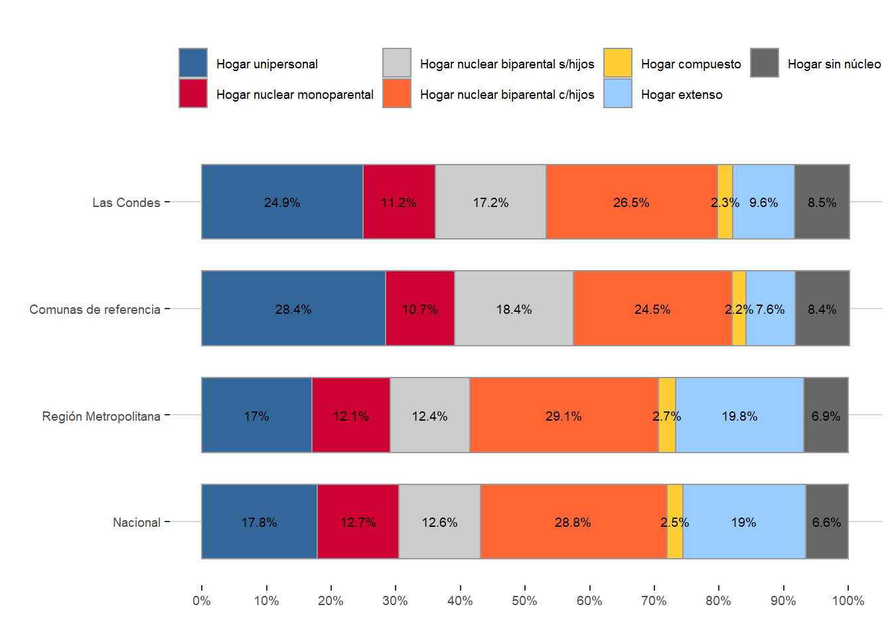

Diagnóstico Social Comunal
Autores: Nicolás Vatter, Paulina Peña, Felipe Vega
Fecha de publicación: Octubre 2019
“Estamos casi ciegos cuando las métricas que guían nuestras acciones son defectuosas o cuando estas no son bien entendidas…las mediciones son determinantes en la manera en que nuestras sociedades se miran a sí mismas, y por tanto, en el modo en que las políticas son diseñadas, implementadas y evaluadas.” - (Stiglitz, Sen, & Fitoussi, 2009:p.9).
Presentación
El presente diagnóstico social tiene como objetivo caracterizar la realidad comunal e identificar las problemáticas sociales que afectan a los vecinos y vecinas de Las Condes. El propósito de la información aquí presentada, es contribuir al diseño e implementación de programas que respondan a la misión de la Dirección, y a las necesidades e inquietudes de los residentes de la comuna.
El estudio está estructurado en cinco capítulos que exploran una serie de indicadores demográficos y socioeconómicos relativos a la comuna. Los capítulos son: (1) Geografía, desarrollo urbano y movilidad, (2) Estadísticas demográficas, (3) Caracterización socioeconómica, (4) Bienestar social básico, y (5) Clases medias.
Como equipo de estudios esperamos aportar a través de este instrumento a cada uno de los departamentos de la Dirección con información y análisis, para que les permita seguir innovando y aplicando sus programas. Este documento queda disponible para que los equipos puedan hacerlo suyo, y reflexionen en torno a sus áreas de acción, buscar nuevas líneas de servicio, y evaluar la pertinencia de su labor para poder así, asistir al bienestar integral de los vecinos y vecinas de Las Condes.
Resumen
En términos generales Las Condes se caracteriza por un alto estándar de calidad de vida, sin embargo, un segmento de la población no cuenta con las mismas oportunidades de acceso al bienestar material que el resto de la comunidad. El análisis desarrollado permite vislumbrar algunas líneas de reflexión que sintonizan con la gestión de los programas sociales ejecutados por DECOM.
El envejecimiento poblacional presenta importantes desafíos y oportunidades para las políticas públicas en Chile. Actualmente el país cuenta con una de las poblaciones más longevas de América Latina, solo entre 1982 y 2017 el promedio de edad pasó de 27 años a 36 años, esto da cuenta del ritmo acelerado con el que envejece la población chilena. Según los datos del Censo 2017, el segmento de personas mayores representa el 16,2% del total de población, y se espera que para el año 2050 esta proporción sea de un 24,1% (Cipem, 2018a).
En el mapa de la vulnerabilidad del Ministerio de Desarrollo Social (2019), se identificó a las personas mayores como un grupo con altos niveles de vulnerabilidad; que sufren serios problemas de abandono, principalmente en zonas rurales; de salud, reflejados entre otros en problemas de salud mental; de precarización laboral con un número significativo trabajando de manera informal; y de educación con bajos niveles de escolaridad.
En este contexto, las estadísticas demográficas demuestran que Las Condes se encuentra en un estado de envejecimiento avanzado, 1 de cada 5 residentes es adulto mayor, lo que la ubica dentro de las comunas urbanas más envejecidas del país. Entre la población mayor, destaca la alta cifra de personas de cuarta edad. Esto constituye una preocupación importante desde el municipio, especialmente si se considera que el 17% de los adultos mayores de 80 años viven solos.
Por otra parte, los análisis sugieren la existencia de importantes brechas socioeconómicas en la comuna, en relación a salud, acceso a los mercados laborales, bienestar subjetivo, entre otros, y que afectan las capacidades de desarrollo de las personas más vulnerables.
En términos de salud se observa como los ingresos y la adscripción a un determinado sistema previsional se vinculan directamente con el estado de salud y el bienestar de los vecinos. Al mismo tiempo, se visualizan desigualdades estructurales en el funcionamiento de los mercados laborales, las que afectan principalmente a mujeres, adultos mayores y personas en situación de discapacidad. Los indicadores de pobreza multidimensional sugieren que la seguridad social y las jubilaciones son las principales dificultades que enfrentan los hogares de la comuna.
En cuanto al bienestar subjetivo, se aprecia como la soledad y abandono, situación que afecta principalmente a los mayores de 80 años, y grupos más vulnerables, incide directamente en la salud autopercibida. En este sentido, se demuestra que la integración y participación social de los vecinos y vecinas, es fundamental en su calidad de vida.
Finalmente, este documento da cuenta de la realidad de las “clases medias” de la comuna. La expansión del consumo, el mayor acceso a oportunidades de educación, un rápido crecimiento económico y la disminución de la pobreza, junto al crecimiento de los segmentos medios, son cambios significativos que ha experimentado el país en los últimos treinta años, y que obligan a repensar las necesidades de los hogares. Esto, interpela de manera directa a los distintos departamentos de DECOM, integrar una mirada de “clases medias” en la gestión de las políticas sociales, es un paso importante hacia la búsqueda de la equidad.
Metodología
El alcance del estudio Diagnóstico Social Comunal es descriptivo, y se realizó desde una óptica comparada de la comuna con las áreas de referencia seleccionadas – Nacional, Región Metropolitana y Comunas de referencia-. La unidad definida como “Comunas de referencia” corresponde al promedio de los indicadores obtenidos para las comunas de Vitacura y Providencia.
El criterio de selección para las comunas de referencia se apoyó en el Índice de Calidad de Vida Urbano (ICVU). Este indicador ubica a las comunas de Las Condes, Vitacura y Providencia como las tres de mejor rendimiento en términos de calidad de vida, lo que satisface un criterio válido de comparación.
Los datos utilizados provienen de fuentes de datos secundarias y de libre acceso. Es preciso aclarar que la encuesta Casen del año 2017 no cuenta con auto representación comunal, por lo que no permite obtener información representativa de la comuna. No obstante, cuando los análisis se realizaron sobre un “n” muestral amplio se empleó la información de 2017, para esto se corroboró el tamaño de la muestra ponderada de Casen con el Censo del mismo año. Por su parte, cuando se utilizaron los datos de Casen del año 2015 solo se utilizó la información de Providencia como Comuna de referencia, dado que para ese año Vitacura no contaba con una muestra representativa.
Capítulo 1: Geografía, Desarrollo Urbano y Movilidad
Las Condes se presenta como un extenso asentamiento urbano en la Región Metropolitana, con una población cercana a los 300 mil habitantes, es la novena comuna con mayor cantidad de población a nivel nacional y la más poblada del sector oriente del Gran Santiago.
La comuna destaca por sus elevados estándares de calidad de vida urbana. Consolidar estos estándares y extenderlo a todos los sectores de la comuna supone un desafío significativo para la gestión municipal, especialmente en un contexto de transición avanzada hacia el envejecimiento de su población.
En esta línea, comprender cómo operan los sistemas de movilidad, transporte y equipamientos públicos en la ciudad es fundamental para una correcta planificación social. Estas variables, se enmarcan en un entendimiento global del desarrollo de las ciudades y comunidades, planteado por Naciones Unidas a través de los Objetivos de Desarrollo Sostenible (ODS).
El presente capítulo entrega una breve caracterización geográfica de la comuna y su subdivisión territorial. El análisis incluye indicadores asociados a la infraestructura urbana, el transporte y la movilidad, y su relación con el cumplimiento de metas del Sistema de Indicadores y Estándares del Desarrollo Urbano (SIEDU).
1.1 Subdivisión urbana: Unidades Vecinales
La Ley 19.418 sobre Juntas de Vecinos y demás organizaciones comunitarias (Ministerio del Interior, 1997) establece los criterios para subdividir los territorios de las comunas. La ley define una Unidad Vecinal como el territorio “(…) en que se subdividen las comunas, para efectos de descentralizar asuntos comunales y promover la participación ciudadana y la gestión comunitaria, y en el cual se constituyen y desarrollan sus funciones las juntas de vecinos”.
Las unidades vecinales son determinadas por el alcalde “…de propia iniciativa o a petición de las juntas de vecinos o de los vecinos interesados, con el acuerdo del Concejo y oyendo al Consejo Económico y Social de la Comuna”. Actualmente, existen 25 unidades vecinales distribuidas en el territorio comunal (ver mapa).
1.1.1 Organizaciones territoriales y funcionales.
La ley 19.418, también reconoce la organización de la comunidad bajo la forma de organizaciones territoriales y organizaciones funcionales. Entre las primeras destacan las juntas de vecinos, mientras que en las segundas aparecen los centros de madres, centros de padres y apoderados, organizaciones artísticas y culturales, organizaciones deportivas, y otras.
De acuerdo con la definición normativa las organizaciones territoriales se caracterizan por constituirse con individuos que residen dentro de una misma unidad vecinal, y tienen por objetivo promover el desarrollo de la comunidad, defendiendo los intereses de los vecinos.Por su parte, las organizaciones funcionales corresponden a agrupaciones con personalidad jurídica y sin fines de lucro, que representan y promueven valores e intereses específicos de una comunidad.
A través del Departamento de Organizaciones Comunitarias, la Dirección de Desarrollo Comunitario de Las Condes fomenta y promueve el funcionamiento adecuado de estas organizaciones que canalizan los intereses y necesidades de los vecinos. En la Tabla 1 se describe la cantidad de organizaciones activas en la comuna.
| Organización | Cantidad |
|---|---|
| Junta de vecinos | 59 |
| Unión comunal | 5 |
| Centro de seguridad | 136 |
| Centro cultural | 53 |
| Club de adulto mayor | 90 |
| Clubes deportivos | 60 |
| Centros de madres | 3 |
| Centros de padres | 20 |
| Centro juvenil | 10 |
| Comité de vivienda | 7 |
| Comité de administración | 13 |
| Otras organizaciones funcionales | 3 |
Fuente: Elaboración propia en base a datos del Departamento de Organizaciones Comunitarias DECOM
1.2. Desarrollo urbano
La Nueva Agenda Urbana (2016), es un acuerdo internacional ratificado por el Estado de Chile en la Conferencia sobre Vivienda y Desarrollo Sostenible de Naciones Unidas, que invita a poner los recursos y esfuerzos en alcanzar la equidad urbana, con el propósito de lograr que las ciudades y los asentamientos humanos sean inclusivos, seguros, resilientes y sostenibles..
En relación a lo anterior, el Instituto Nacional de Estadísticas (INE) a través del Sistema de Indicadores y Estándares del Desarrollo Urbano (SIEDU), ha dispuesto una serie de mediciones que reportan el compromiso de las ciudades para alcanzar el desarrollo urbano. En esta línea el presente apartado aborda estadísticas de áreas verdes, transporte y movilidad a nivel comunal.
1.2.1 Parques e infraestructura urbana
La presencia de áreas verdes en las ciudades genera una serie de externalidades positivas que se traducen en integración, cohesión, participación social de las comunidades, y beneficios sociales intangibles relacionados a un concepto amplio de bienestar y calidad de vida (Anguluri & Narayanan, 2017; Ayala-Azcárraga, Diaz & Zambrano, 2019).
Las Condes, actualmente, cuenta con una superficie de 701.515 metros cuadrados de parques urbanos y 679.627 metros cuadrados de plazas que en total suman 138 hectáreas de áreas verdes urbanas, según los datos del Sistema de Indicadores y Estándares del Desarrollo Urbano (Instituto Nacional de Estadísticas & PNUD, 2018).
Al analizar la cantidad de áreas verdes urbanas per cápita, los datos revelan que en la comuna existen 4,7 metros cuadrados de áreas verdes por habitante, distante de la meta propuesta por el Consejo Nacional de Desarrollo Urbano (CNDU) que es de 10 metros cuadrados por persona.
Entre las comunas con mayor cantidad de áreas verdes per cápita a nivel nacional, Las Condes se ubica en el lugar 58 y a nivel regional ocupa el puesto 23. En la Figura 1 se muestra la distribución de metros cuadrados de áreas verdes por habitantes para las comunas de la Provincia de Santiago a través de un mapa, aquellas comunas con mayor cantidad de áreas verdes per cápita aparecen más oscuras.
Figura 1. Áreas verdes (mt2/habitante) comunas de la Provincia de Santiago.
Fuente: Elaboración propia en base a datos del Sistema de Indicadores y Estándares del Desarrollo Urbano(SIEDU)
Las comunas de referencia, Vitacura y Providencia se encuentran dentro de las tres con mayor cantidad de áreas verdes por persona con un promedio de 17,2 metros cuadrados por habitante. Vitacura se ubica en el primer lugar a nivel nacional con un índice de 18,9 m2/hab., mientras que Providencia aparece en el tercer lugar con 15,5 m2/hab.
En la misma línea, SIEDU rescata información respecto a la distancia mínima promedio1 que existe entre los hogares y las áreas verdes comunales. El objetivo de este indicador es visualizar la accesibilidad que poseen los vecinos a las áreas verdes de su comuna. De acuerdo con las metas planteadas por el CNDU, una distancia inferior a 400 metros es una cifra aceptable que permite elevar los estándares de calidad de vida urbana.
En términos de distancia a plazas públicas y parques urbanos, Las Condes se ubica dentro del lugar 29 del ranking regional, con una distancia media de 335 metros, un nivel aceptable según los parámetros fijados por CNDU, y se encuentra en una mejor situación respecto al promedio de las comunas de referencia (397 metros de distancia promedio).
No obstante, si se observa la interacción de ambos indicadores, distancia y superficie, Las Condes aparece fuera del cuadrante de cumplimiento en acceso a servicios y equipamientos urbanos del CNDU. En este sentido, surge un desafío importante para el municipio. En la Figura 2 se muestra el cumplimiento de los indicadores de SIEDU por cuadrante para todas las comunas del gran Santiago.
Figura 2. Cumplimiento comunal de indicadores de acceso a servicios y equipamientos públicos de áreas verdes Provincia de Santiago.

Fuente: Elaboración propia en base a datos de SIEDU
1.2.2 Transporte y movilidad
La información señalada en el Plan de Desarrollo Comunal 2018 – 2021 (PLADECO), acusa un aumento significativo del tránsito vehicular en Las Condes durante los últimos años, con un crecimiento anual que varía entre un 6% y 17% según el área observada. Por su parte, se indica que el parque automotriz bordea un total de ciento diez mil vehículos.
Los puntos de mayor congestión son el eje Américo Vespucio y Manquehue, estos constituyen los mayores desafíos para la gestión de tránsito. La solución del eje Américo Vespucio excede la capacidad del municipio por lo que, las obras que se harán cargo de esta problemática han sido abordadas por el nivel central a través del sistema de concesiones.
Del mismo modo se observan grados de congestión en otros sectores de la comuna, los cuales están fuera del rango aceptado, a partir de ahí se están desarrollando proyectos de consolidación de la vialidad comunal. En la Tabla 2 se indica la afluencia de vehículos por hora en los puntos de mayor demanda, por horario punta (mañana y tarde). Con estos flujos, las velocidades promedio en la comuna son aceptables en horas punta, alcanzando una velocidad media entre 25 y 50 km/h.
| Lugar | Horario punta mañana | Horario punta tarde |
|---|---|---|
| Av. Andrés Bello dirección poniente | 5850 | 4550 |
| Av. Andrés Bello dirección oriente | 4650 | |
| Av. Kennedy dirección oriente | 4950 | |
| Av Manquehue norte | 2800 | |
| Av. Manquehue sur | 2420 | |
| Av. Vespucio norte | 3000 | 3064 |
| Av. Vespucio sur | 2500 | 2600 |
| Av Colón dirección poniente | 3900 | 2100 |
Fuente: Elaboración propia en base a datos del Sistema de Indicadores y Estándares del Desarrollo Urbano
Al mismo tiempo, las estimaciones de SIEDU indican que el 90% de los viajes en transporte público en la comuna tiene una duración máxima de 75 minutos en horario punta mañana, mientras que para el caso de las comunas de referencia la media es de 76 minutos.
Para el CNDU la duración deseable de los viajes no debiese exceder los 60 min., considerando el costo de oportunidad que implica el tiempo de traslado para las familias .Las Condes se encuentra cercana a alcanzar niveles aceptables de duración de viajes en transporte público. En la Figura 3 se clasifica la brecha existente entre el indicador y la meta.
Figura 3. Clasificación brecha tiempos de traslado en transporte público a nivel comunal en la Provincia de Santiago respecto de la meta CNDU (60 min).

Fuente: Elaboración propia en base a datos de SIEDU
Según los datos recolectados del PLADECO 2018 – 2021, se calcula que en promedio existen alrededor de un millón doscientos mil viajes diarios en la comuna, siendo la mitad de estos dentro de la misma. El principal destino fuera de la comuna es Vitacura con un 13% seguido por Providencia y Lo Barnechea con un porcentaje que bordea el 7%.
Por otra parte, la Encuesta Casen recoge información relativa al tipo de transporte utilizado por la población ocupada para dirigirse a su lugar de trabajo. Al respecto, los datos señalan que el medio de transporte más utilizado por los vecinos de Las Condes para llegar a su lugar de trabajo es el vehículo motorizado particular (auto, camioneta, motocicleta u otro), seguido del uso de transporte público. En la Figura 4 se describen los medios de transporte más utilizados para movilizarse entre el hogar y el lugar de trabajo.
Figura 4. Medio de transporte frecuentemente utilizado para traslado entre el hogar y lugar de trabajo.

Fuente: Elaboración propia en base a datos de Casen 2015
En materia de transporte, existe una serie de desafíos para empujar el desarrollo sostenible y sustentable. En este sentido, el municipio de Las Condes ha incorporado un número importante de servicios de electromovilidad disponibles para los vecinos (scooters y bicicletas), además ha puesto a disposición una flota de buses eléctricos que conectan zonas de residencia que no se encuentran totalmente cubiertas por el sistema de transporte público metropolitano. Esto, con el objetivo de mejorar la capacidad de movilidad urbana en la comuna.
Capítulo 2: Estadísticas demográficas
En el presente capítulo se explora la estructura demográfica de Las Condes, con un foco en el envejecimiento de la población y el fenómeno migratorio. El objetivo de esta sección es caracterizar a los vecinos y hogares de la comuna en un análisis comparado con las áreas de referencia.
En primer lugar, se presenta la estructura demográfica de la comuna según su composición por sexo y edad. Luego, se describen los indicadores de envejecimiento y se caracteriza la población de personas mayores. Enseguida, se exponen indicadores de densidad poblacional y se describe la composición de los hogares. Finalmente, se aborda el fenómeno migratorio, considerando migración internacional y migración interna, además de abarcar al segmento de población perteneciente a pueblos originarios.
2.1 Estructura demográfica
El Censo 2017 reveló que en Chile existen 17.574.003 habitantes distribuidos a lo largo del territorio nacional con una proyección de 19,1 millones al años 2019. La mayor concentración de población se registra en la Región Metropolitana (40,5%), territorio que alberga la capital nacional (Santiago).
En Las Condes, a través del mismo instrumento se contabilizaron un total de 294.838 personas, de las cuales 287.023 corresponden a residentes permanentes2. Si se considera la población total, la comuna representa el 1,7% de los habitantes del país y el 4,1% de la Región Metropolitana. La comuna es la novena más poblada en Chile.
Al mismo tiempo, las estadísticas censales sugieren que Las Condes registra la segunda tasa más elevada de envejecimiento relativo3 en la Región Metropolitana, y los datos de extranjería indican que es la tercera comuna con mayor población migrante en Chile.
2.1.1 Composición de la población según sexo
En Las Condes la composición de la población por sexo indica que existe una mayor proporción de mujeres, tendencia observada para el resto del país. El 53,9% de los vecinos de Las Condes corresponde a población femenina, a nivel nacional y regional esta alcanza el 51,1% y 51,3% respectivamente, mientras que en las comunas de referencia la proporción de mujeres es de 54,4%.
Figura 5. Proporción población por sexo según área de referencia.
Fuente: Elaboración propia en base a datos del Censo 2017
En la misma línea, la razón de sexo 4 a nivel comunal indica un total de 85,5 hombres por cada 100 mujeres. Este índice es menor en comparación a la realidad nacional y regional, pero similar a las Comunas de referencia (Tabla 3). Al mismo tiempo, se observa en Las Condes que por cada 100 hombres existen 116,9 mujeres.
| Razón de sexo | Las Condes | Comunas de referencia | Región Metropolitana | Nacional |
|---|---|---|---|---|
| Índice de masculinidad | 85.5 | 83.8 | 94.8 | 95.9 |
| Índice de feminidad | 116.9 | 119.3 | 105.4 | 104.3 |
Fuente: Elaboración propia en base a datos del Censo 2017
Las estadísticas reflejan una tendencia a nivel nacional. En la población existe una mayor proporción de mujeres, siendo más evidente esta diferencia en las Comunas de referencia y en Las Condes. Tal como se verá en los siguientes apartados, esta mayor cantidad de mujeres es constante en segmentos como adultos mayores, migrantes y pueblos originarios.
2.1.2 Composición etaria de la población
Al analizar la estructura poblacional por edades quinquenales se observa que el rango etario de mayor prevalencia en Las Condes es entre los 25 a 29 años de edad (8,8%), lo cual se condice con lo encontrado a nivel nacional (8,4%) y regional (9%).
En cuanto a la edad promedio de la comuna esta alcanza los 39,1 años, superando la media nacional (35,8 años) y de la Región Metropolitana (35,6 años), y marginalmente por debajo del promedio de las Comunas de referencia (39,5). Ver en la tabla 4.
| Índice edad | Las Condes | Comunas de referencia | Región Metropolitana | Nacional |
|---|---|---|---|---|
| Edad media | 39.1 | 39.5 | 35.6 | 35.8 |
| Edad mediana | 37.0 | 37.0 | 33.0 | 34.0 |
Fuente: Elaboración propia en base a datos del Censo 2017
Una herramienta útil al momento de estudiar la composición etaria de una población es la pirámide poblacional. En esta, se representan gráficamente datos estadísticos básicos de una comunidad como el sexo y la edad. Además, permite realizar comparaciones entre grupos y observar fenómenos de envejecimiento poblacional.
Al analizar la pirámide poblacional para las áreas de referencia, se observan tendencias similares a nivel comunal, regional, y nacional, las cuales permiten concluir que la población se encuentra en transición- en diferentes grados- desde una estructura estacionaria a una regresiva (Figura 6).
Las pirámides estacionarias se caracterizan por la presencia de un equilibrio entre los distintos rangos etarios, el cual se explica por tasas de natalidad y mortalidad equivalentes. Por su parte, una pirámide regresiva presenta en su parte superior una estructura más ancha que en sus bases, como consecuencia del descenso de la natalidad y el aumento en la esperanza de vida. En general, se asocia este tipo de pirámides con sociedades desarrolladas.
Figura 6. Pirámide población según área de referencia.

Fuente: Elaboración propia en base a datos del Censo 2017
Respecto de la natalidad, el índice de paridez media5 sugiere que en promedio las mujeres en edad fértil han tenido menos de un hijo, cifra menor a la tasa de reemplazo generacional esperada6. En la Figura 7 se describe el índice de paridez por área de referencia. A nivel comunal las cifras son significativamente menores a las observadas en el país.
Figura 7. Índice de paridez media según área de referencia..

Fuente: Elaboración propia en base a datos del Censo 2017
El descenso de la natalidad y la elevada expectativa de vida existente en la comuna (ver estadísticas de Salud), indican que esta se encuentra en un estado de envejecimiento avanzado, con una alta proporción de adultos mayores. A continuación, se describen una serie de indicadores que dan cuenta de los niveles de longevidad alcanzados en Las Condes.
En la comuna existe una población total de 61.805 adultos mayores según los datos del Censo 2017, si se considera que en 1992 la población de tercera edad era de 25.658 personas es posible inferir que la comuna está envejeciendo a un ritmo acelerado.
La tasa de crecimiento demográfico , indica que en Las Condes el aumento de la población de personas mayores fue de un 2,5% anual en el periodo intercensal 1982 - 2017. Una cifra elevada teniendo en cuenta que Europa, la región más longeva, experimentó su proceso de envejecimiento a un ritmo de crecimiento del 1,1% anual.
2.1.3 Indicadores de envejecimiento poblacional
Chile es un país que transita aceleradamente hacia el envejecimiento de su población (CEPAL, 2009). El aumento significativo en la esperanza de vida, y la abrupta caída en las tasas de natalidad y mortalidad infantil son fenómenos que explican este escenario.
Los datos del Banco Mundial sugieren que desde 1960 a la fecha el país ha logrado un aumento en la expectativa de vida de su población de alrededor de 24 años, la segunda economía OCDE con mayor crecimiento en este indicador. Al mismo tiempo, es el país con la menor mortalidad infantil bajo los 5 años en todo América Latina.
De acuerdo con las proyecciones del Departamento de Asuntos Económicos y Sociales (DAES) de Naciones Unidas, al año 2050 se espera que Chile supere el 25% de envejecimiento relativo, una proporción similar a alcanzada actualmente por Japón el país más longevo del planeta.
Un estudio del Centro de Investigación en Personas Mayores (2018a) reveló que la edad media de la población chilena entre 1982 y 2017 aumentó de 26,9 años a 35,8 años, y que la tasa de envejecimiento7 en el país es de 80,9 adultos mayores por cada 100 niños, la más elevada de Latinoamérica.
El envejecimiento es uno de los grandes desafíos de política pública. El mapa de la vulnerabilidad del Ministerio de Desarrollo Social identifica al segmento de personas mayores como un grupo con altos niveles de vulnerabilidad social. Es una población que sufre serios problemas de abandono principalmente en zonas rurales; de salud reflejados entre otros, en problemas de salud mental; de precarización laboral con un número importante trabajando informalmente; y de educación con menores niveles de escolaridad.
En este contexto, Las Condes aparece como la segunda comuna con mayor proporción de personas mayores en la Región Metropolitana (21%), siendo superada únicamente por Vitacura (22,9%). En la Figura 8 se describe el porcentaje de adultos mayores por área de referencia.
Figura 8. Índice de envejecimiento relativo según área de referencia.

Fuente: Elaboración propia en base a datos del Censo 2017
En la comuna existe una población total de 61.805 adultos mayores según los datos del Censo 2017, si se considera que en 1992 la población de tercera edad era de 25.658 personas es posible inferir que la comuna está envejeciendo a un ritmo acelerado.
La tasa de crecimiento demográfico 8 , indica que en Las Condes el aumento de la población de personas mayores fue de un 2,5% anual en el periodo intercensal 1982 - 2017. Una cifra elevada teniendo en cuenta que Europa, la región más longeva del planeta, experimentó su proceso de envejecimiento a un ritmo de crecimiento del 1,1% anual.
Por su parte, la relación de dependencia demográfica 9 sugiere que en la comuna existen 44,7 personas en edad inactiva por cada 100 individuos económicamente activos. Estas cifras son relativamente similares para las distintas unidades de referencia (Tabla 5).
Al desagregar la relación de dependencia por tramos de edad, se aprecia que en Las Condes y las Comunas de referencia existe una mayor incidencia de población de 65 años y más sobre la tasa global de dependencia. Esto podría implicar que la relación de dependencia siga aumentado dado los niveles de envejecimiento.
| Índice | Las Condes | Comunas de referencia | Región Metropolitana | Nacional |
|---|---|---|---|---|
| Relación de dependencia | 44.7 | 45.2 | 43.2 | 45.9 |
| Relación de dependencia menores de 0 a 14 años | 22.1 | 21.4 | 27.7 | 29.3 |
| Relación de dependencia Adultos Mayores de 65 años y más | 22.6 | 23.8 | 15.4 | 16.6 |
Fuente: Elaboración propia en base a datos del Censo 2017
En cuanto a la tasa de envejecimiento, los datos censales sugieren que en Las Condes existen 137,3 adultos mayores por cada 100 niños entre 0 y 14 años de edad. Esta cifra difiere de manera importante respecto de los datos a nivel nacional (80,9) y regional (79,5). En la Tabla 6 se describe la tasa de envejecimiento poblacional para las áreas de referencia.
| Índice | Las Condes | Comunas de referencia | Región Metropolitana | Nacional |
|---|---|---|---|---|
| Tasa de envejecimiento | 137.3 | 143.8 | 79.5 | 80.9 |
Fuente: Elaboración propia en base a datos del Censo 2017
2.1.3 Composición de los hogares
Los hogares corresponden al conjunto de una o más personas que unidas o no por una relación de parentesco, comparten la alimentación, el presupuesto, y habitan la misma vivienda o parte de ella. A su vez, estas unidades se clasifican de acuerdo a su composición:
| Tipo de hogar | Definición |
|---|---|
| Hogar unipersonal | Hogar formado por un integrante |
| Hogar nuclear | Hogar integrado por un jefe de hogar, su cónyuge o conviviente y/o sus hijos o hijastros. Este a su vez se divide en; (i) Hogar nuclear monoparental, (ii) Hogar biparental con hijos, y (iii) Hogar biparental sin hijos |
| Hogar extenso | Hogar que integra miembros cuyo parentesco con el jefe de hogar es distinto al de cónyuge o hijo |
| Hogar compuesto | Hogar integrado por personas que no se encuentran unidas por relación de parentesco con el jefe de hogar |
En esta línea, los registros del Censo 2017 indican que en Las Condes existen un total de 106.564 hogares, integrados por 2,7 personas en promedio. Esta cifra es inferior a la reflejada en el país, donde en promedio los hogares se componen por 3,1 personas. En Tabla 8 se describe el número de hogares y su composición según número de integrantes.
| Indicador | Las Condes | Comunas de referencia | Región Metropolitana | Nacional |
|---|---|---|---|---|
| Nº Hogares | 106,564 | 90,102 | 2,238,179 | 5,651,637 |
| Residentes habituales | 288,873 | 221,849 | 7,008,540 | 17,327,192 |
| Personas por hogar | 2.7 | 2.6 | 3.1 | 3.1 |
Fuente: Elaboración propia en base a datos del Censo 2017
De igual manera se observa que la cantidad de niños, entre 0 y 14 años, residentes por hogar en Las Condes es menor a la registrada en el país y la región. En la comuna hay 0,42 niños por hogar, mientras que a nivel nacional y regional esta cifra es de 0,62 y 0,61 respectivamente (Tabla 9). Si se considera solo los hogares donde viven niños, el promedio de menores de 15 años por hogar en la comuna crece a 1,6, número similar al indicado a nivel nacional. Lo anterior obedece a la menor proporción de hogares que integran niños en Las Condes.
| Indicador | Las Condes | Comunas de referencia | Región Metropolitana | Nacional |
|---|---|---|---|---|
| Nº niños (0 a 14 años) | 44,346 | 32,914 | 1,355,131 | 3,468,173 |
| Niños por hogar | 0.42 | 0.42 | 0.61 | 0.62 |
| Nº hogares con niños | 27,478 | 20,743 | 875,052 | 2,256,638 |
| Proporción de hogares con niños | 25.8% | 25.1% | 39.1% | 39.9% |
Fuente: Elaboración propia en base a datos del Censo 2017
En lo referente al número de adultos mayores por hogar, la situación tiende a homologarse en los distintos niveles analizados, siendo el promedio cercano a 0,5 adultos mayores por hogar. Por su parte, la proporción de hogares con presencia de adultos mayores es mayor en Las Condes y Comunas de referencia respecto del país y la región, lo cual es consistente con los niveles de envejecimiento alcanzados por la comuna. En la Tabla 10 se presentan los hogares que integran personas mayores por área de referencia.
| Indicador | Las Condes | Comunas de referencia | Región Metropolitana | Nacional |
|---|---|---|---|---|
| Nº Personas Mayores (60 años y más) | 60,498 | 47,351 | 1,082,003 | 2,816,160 |
| Personas mayores por hogar | 0.57 | 0.55 | 0.48 | 0.5 |
| Nº hogares con personas mayores | 41,037 | 32,167 | 770,831 | 2,013,755 |
| Proporción de hogares con personas mayores | 38.5% | 38% | 34.4% | 35.6% |
Fuente: Elaboración propia en base a datos del Censo 2017
En cuanto a las distintas tipologías de hogar definidas en el Censo, se aprecia que una mayor incidencia de los hogares nucleares biparentales con hijos, independiente del área de referencia analizada. En Las Condes este tipo de hogar representa el 26,5%, cifra relativamente inferior a la obtenida a nivel nacional (28,8%) y regional (29,1%), y superior al promedio de las comunas de referencia (24,5%). En la Figura 9 se describe la clasificación de hogares según área de referencia.
Figura 9. Tipología de hogares según área de referencia.

Fuente: Elaboración propia en base a datos del Censo 2017
Por su parte, cuando analizamos por sexo la figura del jefe/a de hogar observamos una situación bastante homogénea entre las distintas unidades de análisis, existiendo una mayor proporción de jefes de hogar de sexo masculino. En Las Condes el 57,9% de los hogares declara una jefatura masculina mientras que el 42,1% señala jefatura femenina (Figura 10).
Figura 10. Proporción de jefes de hogar desagregada por sexo según área de referencia.

Fuente: Elaboración propia en base a datos del Censo 2017
Del mismo modo, al analizar la edad del jefe de hogar no se aprecian grandes diferencias entre las áreas de referencia. El segmento entre 25 – 59 años representa la mayor proporción de jefes de hogar por edad. En Las Condes el 63% de los hogares tienen un jefe cuya edad oscila entre 25 y 59 años, y un 33,7% cuenta con un jefe de hogar de tercera edad (Figura 11).
Figura 11. Proporción de jefes de hogar desagregada por tramos de edad según área de referencia.

Fuente: Elaboración propia en base a datos del Censo 2017
Con relación al nivel educacional alcanzado por los jefes de hogar, se aprecian diferencias significativas entre las distintas unidades analizadas. En el país y la Región Metropolitana existe una mayor concentración de jefes de hogar con estudios de enseñanza media, mientras que para Las Condes y comunas referencia se registra una alta densidad de jefes de hogar con estudios universitarios
Figura 12. Proporción de jefes de hogar desagregada por nivel educacional completado según área de referencia.

Fuente: Elaboración propia en base a datos del Censo 2017
Finalmente, cabe destacar la significativa cifra de jefes de hogar con estudios de postgrados en Las Condes (17,5%) y Comunas de referencia (19,2%), una realidad diametralmente opuesta a la observada a nivel nacional donde solo el 2,5% de los jefes de hogar cuenta con estudios de postgrado.
2.2 Población de Personas Mayores
Chile se encuentra en un estado avanzado de envejecimiento, y en este contexto Las Condes se sitúa como una de las comunas urbanas más longevas del país. Conocer las características propias de este segmento etario es indispensable para poder abordar de manera integral las necesidades específicas de las personas mayores residentes en la comuna.
Según datos del Censo 2017, el 21% de los vecinos de Las Condes corresponden a adultos mayores, equivalentes a un total de 61.805 personas. Un segmento importante de éstos son personas de la cuarta edad10 (22,6%). Esta proporción de la población merece especial atención, por lo que más adelante se plantea una sección especialmente dedicada a ella, mientras que en el presente apartado se exploran una serie de dimensiones que abordan la situación de la población mayor en general. La Figura 13 describe la composición de la población mayor desagregada por edad en tramos para todas las áreas de referencia.
Figura 13. Personas mayores desagregados por tramos de edad según área de referencia.

Fuente: Elaboración propia en base a datos del Censo 2017
Una de las particularidades que presenta la población de personas mayores es la alta proporción de mujeres, especialmente en edades avanzadas. En Las Condes alrededor del 61% de los adultos mayores corresponden a población femenina, una proporción elevada en comparación a la observada a nivel nacional.
Figura 14. Proporción de personas mayores por sexo según área de referencia.

Fuente: Elaboración propia en base a datos del Censo 2017
Las mayores expectativas de vida alcanzadas por las mujeres explican este fenómeno cuando se trata de poblaciones de edad avanzada. Cuando la edad aumenta también lo hace la participación femenina en la composición demográfica. Por otra parte, un fenómeno importante de explorar es la soledad y abandono que enfrentan las personas mayores, lo que es preocupante, particularmente en personas que superan los 80 años, segmento que registra las tasas de suicidio más altas en todo el país.
A partir de los datos recogidos por el Censo 2017, es posible aproximarse a dicha realidad mediante el análisis de la composición de las viviendas. Cuando la composición de la vivienda sugiere que en ella reside solo una persona, se entiende como un índice aproximado de soledad.
Al respecto, se observa en la Figura 15 que la proporción de adultos mayores que viven solos es relativamente similar a nivel nacional (13,5%) y regional (11,9%). En Las Condes (15%), y Comunas de referencia (17,5%) se aprecia una proporción superior de adultos mayores que viven solo respecto del resto de las unidades analizadas.
Figura 15. Proporción de Personas mayores según convivencia en la vivienda por área de referencia.

Fuente: Elaboración propia en base a datos del Censo 2017
En relación a la edad de las personas mayores que viven solas en la comuna, se aprecia que a medida que aumenta la edad también lo hace la proporción de personas que viven solas dentro del mismo rango etario, esta relación es evidente hasta los 90 años de edad. En el segmento de personas entre 75 y 89 años se registra la mayor proporción de adultos mayores viviendo solos, con una cifra que alcanza como máximo el 18%.
Figura 16. Proporción de personas mayores que viven solas por tramo de edad en Las Condes.

Fuente: Elaboración propia en base a datos del Censo 2017
Respecto de los tipos de hogares donde viven las personas mayores, los datos sugieren que existe una elevada concentración de residentes en hogares unipersonales en la comuna, un 18% de los adultos mayores de Las Condes integran un hogar solos, y una tendencia interesante es la que se refleja en la situación de los hogares extensos, donde se aprecia que en Las Condes (17,8%) y Comunas de referencia (14,3%), la proporción de adultos mayores es significativamente menor a la observada a nivel nacional (29,8%) y regional (31,8%).
Figura 17. Proporción de personas mayores por tipo de hogar según área de referencia.
Fuente: Elaboración propia en base a datos del Censo 2017
2.2.1 Personas mayores y Educación
La educación es un factor de incidencia directa en la calidad de vida de las personas, especialmente en edades avanzadas donde juega un papel importante en el autocuidado de la salud (Ross & Wu, 1996).La encuesta de calidad de vida en la vejez (2017) concluye que el nivel educacional es uno de los factores de mayor variación sobre el índice de calidad de vida; a mayor nivel educacional la calidad de vida aumenta sustantivamente.
En esta línea, los datos censales dan cuenta de elevados niveles de escolaridad en los adultos mayores residentes en Las Condes y Comunas de referencia. Las personas de 60 años y más en la comuna alcanzan una escolaridad promedio de 13,8 años, mientras que en el país esta es de 8,3 años (Tabla 11).
| Indicador | Las Condes | Comunas de referencia | Región Metropolitana | Nacional |
|---|---|---|---|---|
| Escolaridad media | 13.8 | 14 | 9.2 | 8.3 |
| Escolaridad mediana | 15 | 15 | 9 | 8 |
Fuente: Elaboración propia en base a datos del Censo 2017
No obstante, cuando observamos la escolaridad de las personas mayores por sexo obaservamos una brecha importante . El promedio de años de educación para los hombres es de 15,1 mientras que en mujeres la escolaridad media es de 12,9 años. Cuando se observa la mediana de la escolaridad las diferencias por sexo aumentan considerablemente (Tabla 12).
| Indicador | Hombre | Mujer |
|---|---|---|
| Escolaridad media | 15.1 | 12.9 |
| Escolaridad mediana | 17 | 12 |
Fuente: Elaboración propia en base a datos del Censo 2017
Al mismo tiempo, cuando se analiza el nivel educacional alcanzado por los adultos mayores es posible apreciar como en Las Condes existen una mayor proporción de personas mayores con estudios de educación superior, especialmente con estudios profesionales.
En la comuna el 35,3% de los adultos de 60 años y más terminaron una carrera profesional universitaria y un 8,3% cuentan con estudios postgrado, mientras que a nivel nacional la realidad es opuesta, donde solo 8,3% de las personas mayores alcanzo estudios profesionales (Figura 18).
Figura 18. Nivel educacional alcanzado por personas mayores según área de referencia.

Fuente: Elaboración propia en base a datos del Censo 2017
2.2.2 Personas Mayores y Mercado Laboral
Uno los principales desafíos que deberán enfrentar las economías en desarrollo es el envejecimiento de su fuerza laboral (CIPEM, 2018b). En la literatura académica ya se visualizan una serie de consecuencias asociadas, como el aumento de la tasa de participación laboral11 sobre los 60 años, y un retraso en los patrones tradicionales de entrada y salida de la fuerza de trabajo (Bloom, Canning, & Lubet, 2015).
Al respecto, las estadísticas sugieren que Chile es uno de los países OCDE con mayor retraso en la edad de jubilación real respecto de la edad legal. En el caso de los hombres la edad promedio de retiro del mercado laboral alcanza los 70,5 años, mientras que en las mujeres es de 67,7 años (OECD, 2017).
Desde 1990 a la fecha, la tasa de participación laboral en personas mayores creció de un 22,1% a un 35,3% según los datos de la Organización Mundial del Trabajo (OIT). Existe una elevada proporción de adultos mayores que señala que su principal razón para seguir en el mercado de trabajo es porque su empleo les permite seguir activos en una dimensión social y económica, aunque en la medida que aumenta la edad aparecen razones de necesidad económica.
De acuerdo a los resultados obtenidos de Encuesta de Calidad de Vida del Adulto Mayor e Impacto del Pilar Solidario (ENCAVIDAM), el 90,4% de las personas mayores, entre 60 y 79 años que trabajan se sienten satisfechas o muy satisfechas con su empleo. Mientras que, para los trabajadores sobre 80 años esta proporción cae significativamente (69,5%).
El reporte de la encuesta de Calidad de Vida de la Vejez da cuenta que los salarios son una de las principales fuentes de obtención de ingresos para las personas mayores, lo que se convierte en un incentivo directo para seguir económicamente activos.
Los datos del Censo 2017 señalan que alrededor de un tercio de los adultos mayores a nivel nacional está trabajando o buscando empleo (32,4%), esta cifra es mayor en Las Condes donde 4 de cada 10 personas mayores se encuentran económicamente activas. En la Figura 19 se describe el porcentaje de adultos de 60 años y más por su condición de actividad para cada área de referencia analizada.
Capítulo 3: Caracterización Socioeconómica
Capítulo 5: Estratos medios: Una caracterización de las “clases medias”.
Bibliografía
Alkire, S., Apablaza, M., Chakravarty, S., & Yalonetzky, G. (2017). Measuring chronic multidimensional poverty. Journal of Policy Modeling, 39(6), 983–1006.
Alkire, S., & Foster, J. (2011). Counting and multidimensional poverty measurement. Journal of Public Economics, 95(7–8), 476–487.
Anguluri, R., & Narayanan, P. (2017). Role of green space in urban planning: Outlook towards smart cities. Urban Forestry & Urban Greening, 25, 58–65.
Atkinson, A. B. (2003). Multidimensional deprivation: contrasting social welfare and counting approaches. The Journal of Economic Inequality, 1(1), 51–65.
Ayala-Azcárraga, C., Diaz, D., & Zambrano, L. (2019). Characteristics of urban parks and their relation to user well-being. Landscape and Urban Planning, 189, 27-35.
Balaz, V., & Williams, A. M. (2011). Risk attitudes and migration experience. Journal of Risk Research, 14(5), 583–596.
Bardasi, E., Jenkins, S., & Rigg, J. (2002). Retirement and the income of older people: a British perspective. Ageing and Society, 22(2), 131–159.
Benyamini, Y. (2016). Self-rated health. In Y. Benyamini, M. Johnston, & E. C. Karademas (Eds.), Assessment in health psychology (2nd ed., pp. 175–188). Boston: Hogrefe.
Bloom, D. E., Canning, D., & Lubet, A. (2015). Global population aging: Facts, challenges, solutions & perspectives. Daedalus, 144(2), 80–92.
Burchell, B., Sehnbruch, K., Piasna, A., & Agloni, N. (2013). The quality of employment and decent work: definitions, methodologies, and ongoing debates. Cambridge Journal of Economics, 38(2), 459–477.
Cabieses, B., Bernales, M., Obach, A., & Pedrero, V. (2016). Vulnerabilidad social y su efecto en salud en Chile. Desde la comprensión del fenómeno hacia la implementación de soluciones (1st ed.). Santiago de Chile: Universidad del Desarrollo.
Castles, S., De Haas, H., & Miller, M. J. (2013). The age of migration: International population movements in the modern world. Palgrave Macmillan.
CEPAL. (2009). El envejecimiento y las personas de edad. Indicadores sociodemográficos para América Latina y el Caribe (CELADE, Ed.). Retrieved from https://www.cepal.org/es/publicaciones/1350-envejecimiento-personas-edad-indicadores-sociodemograficos-america-latina-caribe
CIPEM. (2018a). Contexto Demográfico Global y Chileno: Situación de la Población Adulto Mayor. Retrieved from http://www.cipem.cl/wp-content/uploads/2018/12/Informe-1.pdf
CIPEM. (2018b). Mercado Laboral y Personas Mayores. Retrieved from http://www.cipem.cl/wp-content/uploads/2018/12/Reporte-II-20_12FV.pdf
Dahlgren, G., & Whitehead, M. (1991). Policies and strategies to promote social equity in health (1st ed.). Stockholm: Institute for future studies.
Davies, A. R., & Ware, J. E. (1981). Measuring health perceptions in the health insurance experiment (1st ed.). Los Angeles: Rand Corporation.
Donoso, E. (2008). Embarazo adolescente: un problema país. Revista Chilena de Obstetricia y Ginecología, 73, 291–292.
Estudios Urbanos UC. (2019). Índice de Calidad de Vida Urbana Comunas y Ciudades de Chile. Retrieved from https://www.cchc.cl/uploads/comunicacion/archivos/20180508_ICVU_2018-_Versión_Definitiva.pdf
Fernandez, B., & Herrera, S. (2017). Chile y sus mayores: 10 años de la Encuesta Calidad de Vida en la Vejez UC - Caja Los Andes. Retrieved from http://adultomayor.uc.cl/docs/Libro_CHILE_Y_SUS_MAYORES_2016.pdf
Franco, R., Hopenhayn, M., & León, A. (2010). Las clases medias en América Latina (1st ed.). México D.F: CEPAL.
Goss, D., Goss, F., & Adam-Smith, D. (2000). Disability and employment: a comparative critique of UK legislation. The International Journal of Human Resource Management, 11(4), 807–821.
Grundy, E., & Sloggett, A. (2003). Health inequalities in the older population: the role of personal capital, social resources and socio-economic circumstances. Social Science & Medicine, 56(5), 935–947.
Halek, M., & Eisenhauer, J. G. (2001). Demography of risk aversion. Journal of Risk and Insurance, 1–24.
Idler, E., & Cartwright, K. (2018). What do we rate when we rate our health? Decomposing age-related contributions to self-rated health. Journal of Health and Social Behavior, 59(1), 74–93.
Instituto Nacional de Estadísticas. (2016). Jefatura de hogar: Usos del concepto, historia, críticas y expresión en los indicadores. Retrieved from http://historico.ine.cl/genero/files/estadisticas/pdf/documentos/jefatura_hogar.pdf
Instituto Nacional de Estadísticas, & PNUD. (2018). Sistema de Indicadores y Estándares del Desarrollo Urbano (SIEDU). Retrieved July 25, 2019, from http://siedu.ine.cl/compromisos/compromisos.html
International Labour Organization. (2019). World Employment Social Outlook. Retrieved from https://www.ilo.org/wcmsp5/groups/public/---dgreports/---dcomm/---publ/documents/publication/wcms_670542.pdf
Kotok, S., Ikoma, S., & Bodovski, K. (2016). School climate and dropping out of school in the era of accountability. American Journal of Education, 122(4), 569–599.
Krugman, P. (1994). Competitiveness: A Dangerous Obsession. Foreign Affairs, 73(2), 28–44.
Libertad y Desarrollo. (2019). Hacia una definición de clase media en Chile. Retrieved from https://lyd.org/wp-content/uploads/2019/05/tp-1399-clase-media.pdf
Marmot, M., & Allen, J. J. (2014). Social Determinants of Health Equity. American Journal of Public Health, 104(S4), S517–S519.
Marmot, M., Friel, S., Bell, R., Houweling, T. A. J., & Taylor, S. (2008). Closing the gap in a generation: health equity through action on the social determinants of health. The Lancet, 372(9650), 1661–1669.
Martin, J. (2015). Activation and active labour market policies in OECD countries: stylised facts and evidence on their effectiveness. Journal of Labor Policy, 4(1), 4.
Ministerio de Desarrollo Social. (2015). Definición de ingresos Casen. Retrieved June 25, 2019, from http://observatorio.ministeriodesarrollosocial.gob.cl/casen/casen_def_ingresos.php
Naciones Unidas. (2009). Clasificación Industrial Internacional Uniforme de todas las acividades económicas (CIIU). Retrieved from file:///C:/respaldo/Downloads/SLV_2017_EHPM_v01_M_DIGESTYC-TEC-CIIU_Rev4.pdf
Newman, P., & Jennings, I. (2008). Cities as Sustainable Ecosystems (1st ed.). Washington, DC: ISLAND PRESS.
Nussbaum, M. C. (2000). Women and Human Development: The Capabilities Approach (1st ed.). Cambridge: Cambridge University Press.
OECD. (2017). Pensions at a Glance 2017: OECD and G20 Indicators. Paris: OECD Publishing.
Okun, M. A., Stock, W. A., Haring, M. J., & Witter, R. A. (1984). Health and Subjective Well- Being: A Meta-Analyis. The International Journal of Aging and Human Development, 19(2), 111–132.
Östlin, P. (2008). Gender inequity in health: why it exists and how we can change it. Global Public Health, 3, 1–12.
Ravenstein, E. G. (1885). The laws of migration. Journal of the Statistical Society of London, 48(2), 167–235.
Rodríguez, J., & Busso, G. (2009). Migración interna y desarrollo en América Latina entre 1980 y 2005 (1st ed.). Santiago: Naciones Unidas.
Ross, C. E., & Wu, C.-L. (1996). Education, Age, and the Cumulative Advantage in Health. Journal of Health and Social Behavior, 37(1), 104–120.
Sapelli, C. (2011). A cohort analysis of the income distribution in Chile. Estudios de Economía, 38(1), 223–242.
Sehnbruch, K., González, P., Apablaza, M., Méndez, R., & Arriagada, V. (2020). The Quality of Employment (QoE) in nine Latin American countries: A multidimensional perspective. World Development, 127, 104738.
Sen, A. (2000). Poverty as Capability Deprivation. In Development as freedom (1st ed., pp. 78– 96). New York: Anchor Books.
Sen, A. (2001). Development as freedom (1st ed.). Oxford: Oxford Paperbacks.
Sen, A. (2002). Why health equity? Health Economics, 11(8), 659–666.
Servicio Nacional de la Discapacidad. (2016). II Estudio Nacional de la Discapacidad. Santiago.
Stiglitz, J., Sen, A., & Fitoussi, J. P. (2009). The measurement of economic performance and social progress revisited. Reflections and overview. Commission on the measurement of economic performance and social progress, Paris.
UNESCO (2015). Education 2030: Towards inclusive and equitable quality education and lifelong learning for all. Retrieved from https://unesdoc.unesco.org/ark:/48223/pf0000245656
United Nations, Department of Economics and Social Affairs, P. D. (2017). International Migration report 2017: Highlights. New York.
United Nations. (2016). Nueva Agenda Urbana. Retrieved from http://habitat3.org/wp-content/uploads/NUA-Spanish.pdf
United Nations. (2018). Disability and Development Report. Retrieved from https://www.un.org/disabilities/documents/2019/UN-flagship-report-disability-7June.pdf
Uribe, G. G.-B. (2014). Pobreza infantil e impacto de la crisis en la infancia. Educación y Futuro: Revista de Investigación Aplicada y Experiencias Educativas, (30), 109–126.
Weiss, R. S., Bass, S. A., Heimovitz, H. K., & Oka, M. (2005). Japan’s silver human resource centers and participant well-being. Journal of Cross-Cultural Gerontology, 20(1), 47–66.
World Health Organization. (2007). Global Age-Friendly Cities. Retrieved from https://www.who.int/ageing/publications/Global_age_friendly_cities_Guide_English.pdf
World Health Organization. (2018). Ageing and health. Retrieved October 22, 2019, from https://www.who.int/news-room/fact-sheets/detail/ageing-and-health
Este indicador se construye a partir de distancia mínima promedio ponderada por población entre el centro geométrico de cada manzana y la plaza pública más cercana. Dicha distancia se pondera en función de la población a nivel de manzana con la finalidad de no subestimar el resultado final. El estándar establecido por el CNDU para este indicador es de 400m.↩
Residentes se refiere a las personas censadas que declaran residencia habitual en Las Condes. Se considera a los individuos encuestados dentro o fuera de la comuna.↩
La tasa de envejecimiento relativo expresa la proporción de personas de 60 años y más sobre el total de población.↩
(Total de hombres/ Total de mujeres) x 100.↩
Promedio de hijos nacidos vivos que las mujeres de entre 15 y 49 años (edad fértil) han tenido a lo largo de su vida.↩
La tasa de reemplazo generacional supone un promedio de hijos nacidos vivos por mujer, requeridos para sostener un volumen de población constante en el tiempo (sin considerar recambios por efectos de migración internacional), este índice se cálcula en 2,1 hijos nacidos vivos.↩
La tasa de envejecimiento es un indicador que señala la cantidad de personas mayores por cada 100 niños menores de 15 años.↩
La tasa de crecimiento demográfico es un indicador que expresa el ritmo de crecimiento de una población en un periodo de tiempo determinado.↩
La relación de dependencia corresponde a la cantidad de población en edades “teóricamente” inactivas en relación a la población en edades “teóricamente” activas. Da cuenta de la carga que tiene la población económicamente activa. Se calcula como la razón entre el total de población de 0 a 14 años más la población de 65 y más, y el total de población de 15 a 64 años, multiplicado por 100.↩
La cuarta edad se define como el periodo que se extiende desde los 80 años de edad hasta el final del ciclo de vida. Recientemente, la legislación en Chile incluyó el concepto de “cuarta edad” mediante una modificación de la ley 19.828 que crea el Servicio Nacional del Adulto Mayor (SENAMA).↩
La tasa de participación laboral representa la proporción de población económicamente activa respecto del total de población. En el caso de los adultos mayores, esta expresa el porcentaje de personas de 60 años y más que se encuentran económicamente activos respecto del total de personas de tercera edad.↩

 (2) 29507613 / (2) 29507601
(2) 29507613 / (2) 29507601  Avenida Apoquindo 9070, Las Condes
Avenida Apoquindo 9070, Las Condes http://github.com/EstudiosDecom
http://github.com/EstudiosDecom  Felipe Vega (desarrollador)
Felipe Vega (desarrollador)